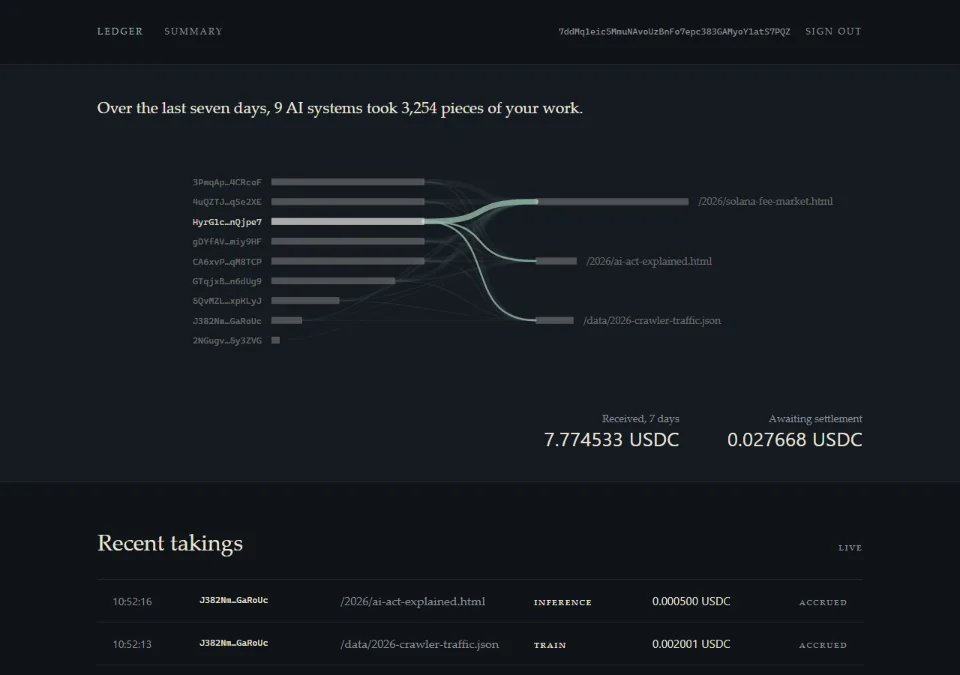
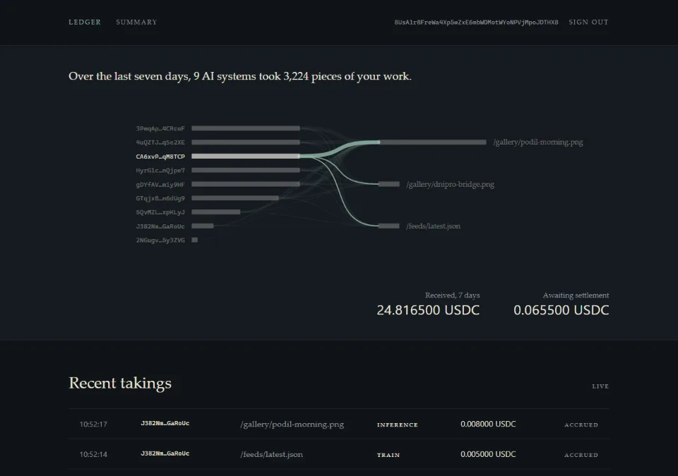
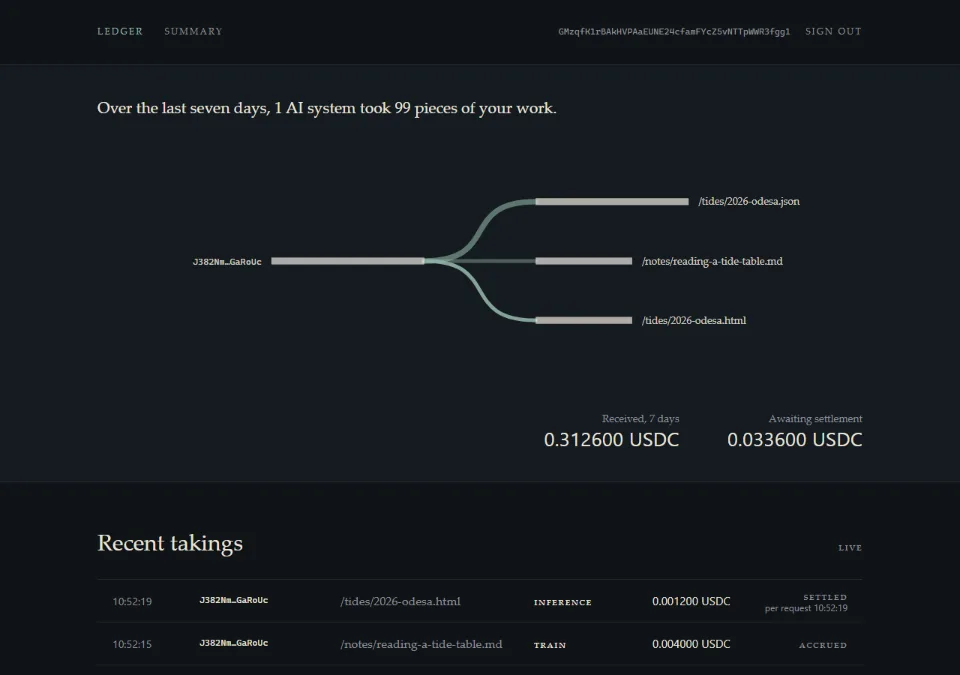

A royalty rail for AI data
One request.
One work.
One receipt.
An AI agent asks for a single work, pays its publisher in the same exchange, and leaves with the content and a receipt. The publisher watches the payment arrive. The receipt can be checked against a root on Solana.
36ba4b231e881d7e538d9230379f0ad0
9b37ff3cbfa6054272cee0c8e0d0f7c6
- Work
- acme-news.test
/2026/ai-act-explained.html - Use
- train
- Tariff
- 0.002000 test USDC · domain rate
- Protocol fee
- 0.000200 test USDC
- Paid by
- 3gTX…wXj2
- Accepted
- 2026-10-07 11:46:09 UTC
- Content hash
- 2ac77511…e966f4 = registered
- Batch
- receipts 1–12 · settled 11:46:35
- Transaction
- 5ngSct21…8HUZG ↗
- Root
- 5d0cf47a…5732e8
Quoted before served
An unpaid request gets 402 Payment Required naming the work, the use, the publisher’s tariff and the protocol fee as two separate amounts, and the ways this agent can pay. The publisher is paid the tariff, exactly; the fee is added on top. A source that is not registered is refused — it is never served for free.
0 of 70requests without a valid proof got content — 11 kinds, replays included. Run M1, 6 Oct 2026.
Paid in the same exchange
Escrow voucher
Drawn on the agent’s own escrow. No transaction per request; receipts settle later, in batches. The operator key cannot draw beyond what the agent signed.
x402
One transfer for this one request, made before the content is released.
0.79 s · 0.82 scontent back against a valid proof, p95, escrow and x402. Run M1.
3.3 sthe full x402 cycle, payment confirmation included, p95 — over a 3 s budget. Recorded as a miss.
Served with the bytes on record
The gateway proxies only sources registered on-chain: source is a registry key, not a URL it will fetch for anyone. It hashes the bytes it served and writes that hash into the receipt beside the one the publisher registered. A mismatch is marked on the receipt, not hidden.
Credited to the publisher
The publisher signs in with their wallet and sees every arrival on their own works: who took what, for which use, for how much — and nothing that belongs to anyone else.



879 msfrom acceptance to the publisher’s feed, p95 — 300 of 300 arrivals, three publishers at once, none saw another’s row. Run M2.
Settled in a batch
The settler gathers an agent’s receipts into one transaction. It pays every publisher’s tariff and the protocol fee, and writes the Merkle root of the batch into the on-chain log. A batch costs two signatures in network fees, whatever its size.
0.003 ¢per request, network fees included, with SOL at $120.37 — under 0.1 ¢ until SOL reaches $4,615. Run M1.
0 apartpayouts against payments, to the base unit, over 5,550,429 — on tariffs that do not divide evenly. Run M1.
pnpm --filter @contentledger/verify-receipt verify 36ba4b231e881d7e538d9230379f0ad09b37ff3cbfa6054272cee0c8e0d0f7c6Checked against the chain
The root and the payer’s chain are read from the network.
The receipt’s path leads to that root.
The published batch reproduces the agent’s hash chain.
The amounts add up to what the transaction debited.
The gateway supplies only the composition of the batch; every claim about money is checked on-chain.
Tested, not yet run at scale.The verifier’s suite forges each field in turn, and a batch invented whole — each fails one of the four checks.
What this receipt does not prove
Reverse- That the publisher owns the rights. The registry records a claim; nobody checks it, and no court has seen one of these receipts.
- That the domain is theirs. Domains are seeded by the operator’s script. Attestor nodes that would confirm a licence mark on the source are not running yet.
- That anyone can sign up. Publishers cannot register themselves yet.
- That the money is real. Devnet, and a test currency with six decimals — not Circle’s USDC.
- That the publishers are. Made-up publishers on .test domains serve a fixture corpus.
- That nobody took the work without paying. ContentLedger makes paying cheaper than going around. It does not detect scraping.